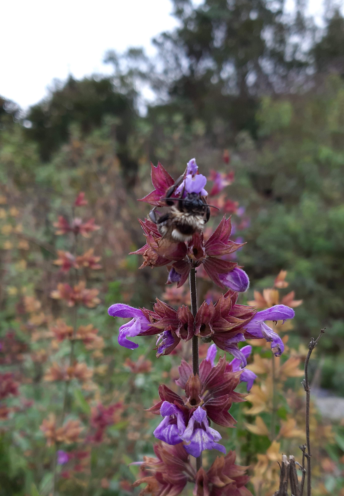
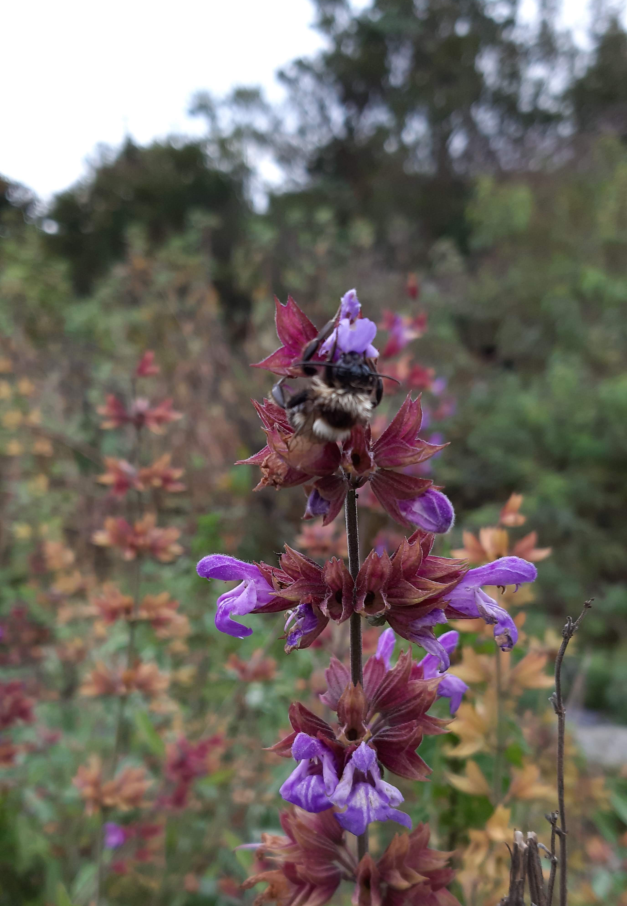
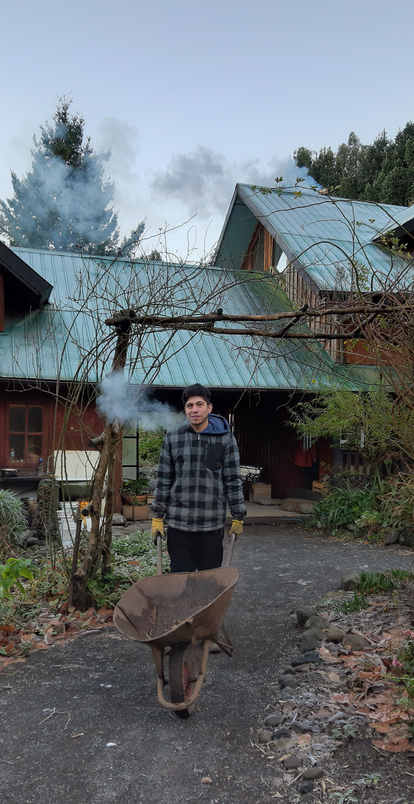

HUELMO, CHILE
Abril, 2019
Funções exercidas: Plantio, Colheita e Manutenção de hortas orgânicas com técnicas de agricultura biodinânima e agroecologia; participação na execução da fundação de uma residência construída com técnicas de bioconstrução, materiais locais e aplicação de técnicas anti-terremoto.

 



×

VALDIVIA, CHILE
Maio, 2019
Funções exercidas: Projeto e execução de jardim para uma hospedagem para turismo com kayak, realizado com custo zero, somente com espécies nativas e materiais presentes no local; Colheita e manutenção da vegetação presente no terreno.
OSORNO CHILE
Junho/Julho, 2019
Funções exercidas: Plantio, manutenção e colheita de jardins orgânicos com técnicas de agricultura biodinâmica e agroecologia; Manutenção de Canteiros e Caminhos; Desenvolvimento de Planejamento e Conteúdo Gráfico para Mídias Sociais e Comunicação para o Centro de Retiros Terapêuticos.

SAN PEDRO DE ATACAMA, CHILE
Agosto, 2019
Funções exercidas: Participação na execução de uma residência e muros com técnicas de bioconstrução no deserto.
MIZQUE, Bolivia
Setembro, 2019
Funções exercidas: Plantio, Colheita e manutenção de hortas orgânicas com técnicas de agricultura biodinâmica e agroecologia; Participação na construção de uma residência em bioconstrução com uso de materiais locais; Desenvolvimento de Material Gráfico para o Centro de Permacultura.
SAMAIPATA, BOLIVIA
Outubro, 2019
Funções exercidas: Plantio e manutenção de hortas orgânicas; Colheita de Flores comestíveis destinadas a bares, confeitarias e restaurantes de alto padrão.